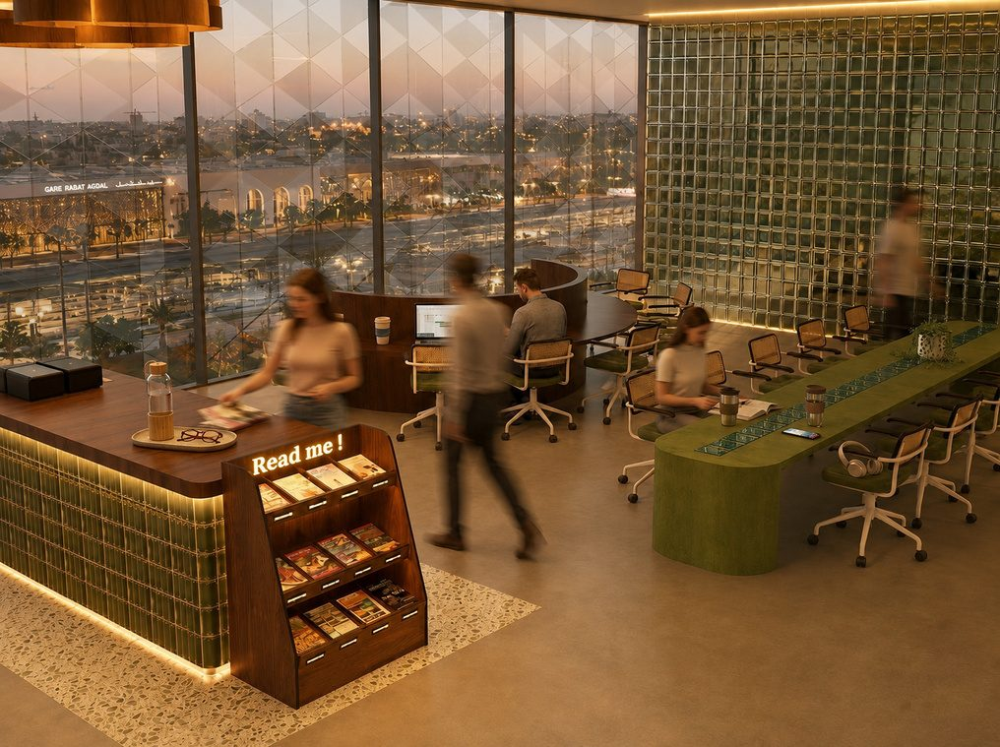
05 / 06 — Collection de mobilier sur mesure
Mobiliercoworking
Quatre familles de mobilier pour travailler ensemble et seul.
01 — Concept
Conception et fabrication de mobilier pour le coworking Le Refuge Intellectuel, situé à la gare Rabat Agdal. Ce mobilier comprend des îlots semi-fermés, des tables hautes et une table basse, conçus pour favoriser le travail individuel comme collaboratif, tout en assurant confort et intimité.
Chaque pièce répond à un usage précis : les îlots privés pour la concentration (hauteur 2 m, rayon 2 m, plâtre BA13 sur ossature cintrée, textile acoustique vert sauge), la table translucide avec son insert de briques de verre vert encastrées à fleur de plateau (20 × 20 × 8 cm) pour les échanges, les bureaux collectifs en arc de cercle pour la collaboration, et les gradins monumentaux revêtus de Gerflex finition noyer pour les conférences, lectures publiques et Book Club.
Matériaux & finitions
Un vocabulaire matière cohérent traverse l’ensemble du mobilier : le chêne et le noyer pour la structure, le microciment vert olive et le plâtre BA13 cintré pour les volumes, le textile acoustique vert sauge pour le confort sonore, les briques de verre vert pour la lumière, et le Gerflex finition noyer pour les assises.
Chaque pièce est pensée comme un ensemble : structure, revêtement, confort d’usage et mobilier intégré sont dessinés ensemble, jamais ajoutés après coup.
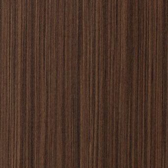

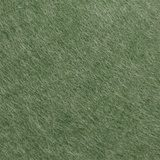
- Structure
- Chêne massif, MDF habillé d’un placage noyer
- Volumes
- Plâtre BA13 sur ossature métallique cintrée
- Revêtement
- Microciment vert olive mat
- Confort sonore
- Textile acoustique vert sauge en intérieur de cloison
- Assises
- Velour vert olive, Gerflex finition noyer
- Lumière
- Briques de verre vert — 20 × 20 × 8 cm
- Finition
- Enduit lissé de teinte claire
Vocabulaire matière
Îlot privé de travail
Les espaces de travail individuels sont conçus sous forme d’îlots semi-fermés offrant concentration et confort tout en maintenant une connexion visuelle avec l’espace collectif.
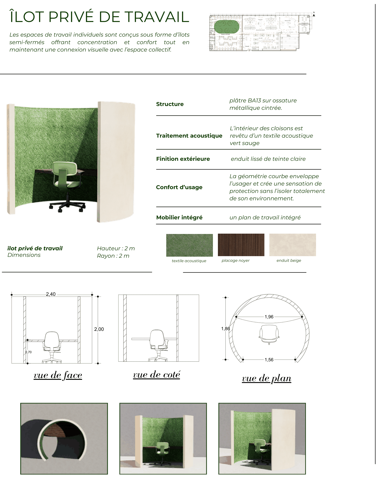
Planche complète : vue d’ensemble du poste, description, plan de repérage dans le coworking, dimensions (hauteur 2 m, rayon 2 m), swatches (textile acoustique, placage noyer, enduit beige), vues de face, de côté et de plan cotées, puis les trois rendus d’ambiance.
| Rubrique | Description |
|---|---|
| Structure | Plâtre BA13 sur ossature métallique cintrée |
| Traitement acoustique | L’intérieur des cloisons est revêtu d’un textile acoustique vert sauge |
| Finition extérieure | Enduit lissé de teinte claire |
| Confort d’usage | La géométrie courbe enveloppe l’usager et crée une sensation de protection sans l’isoler totalement de son environnement |
| Mobilier intégré | Un plan de travail intégré |
| Dimensions | Hauteur 2 m · rayon 2 m |
Cotes relevées sur les vues cotées : 2,40 de largeur et 2,00 de profondeur en vue de face, 1,96 / 1,88 / 1,56 au plan.
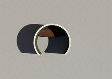
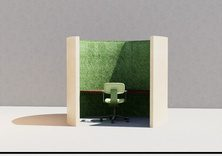
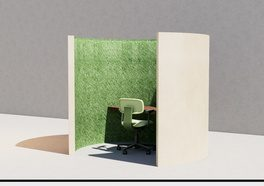
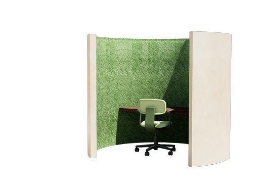
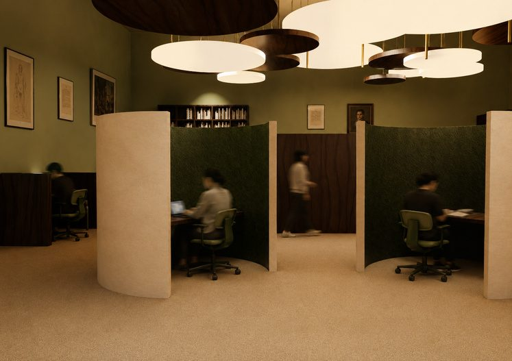
La table translucide
Cette gamme de tables à hauteur constante est conçue pour répondre aux différents usages du coworking, du travail individuel aux sessions collaboratives.
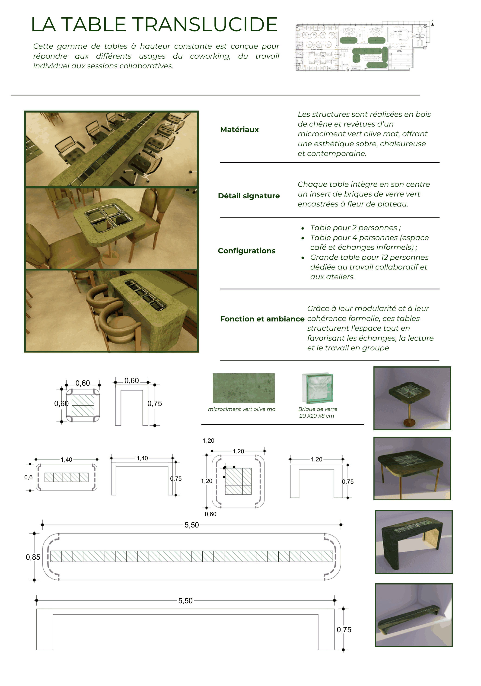
Planche complète : renders des trois formats, description, plan de repérage, fiche matériaux & détails (microciment vert olive mat, brique de verre 20 × 20 × 8 cm), cotes des plans et sections, grande table de 5,50 avec plateau hachuré et élévation de 5,50 × 0,75.
| Rubrique | Description |
|---|---|
| Matériaux | Les structures sont réalisées en bois de chêne et revêtues d’un microciment vert olive mat, offrant une esthétique sobre, chaleureuse et contemporaine |
| Détail signature | Chaque table intègre en son centre un insert de briques de verre vert encastrées à fleur de plateau — 20 × 20 × 8 cm |
| Configurations | Table pour 2 personnes ; table pour 4 personnes (espace café et échanges informels) ; grande table pour 12 personnes dédiée au travail collaboratif et aux ateliers |
| Fonction et ambiance | Grâce à leur modularité et à leur cohérence formelle, ces tables structurent l’espace tout en favorisant les échanges, la lecture et le travail en groupe |
Cotes relevées sur la planche : 1,40 × 0,60 et 1,20 × 1,20 en plan, hauteurs de 0,75 et 0,60 en section, grande table de 5,50 × 0,85.
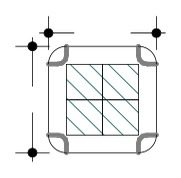
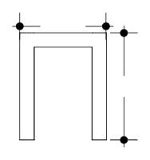
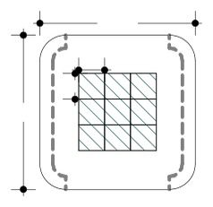
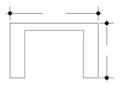
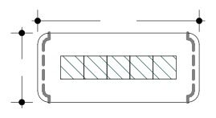
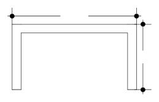
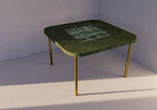
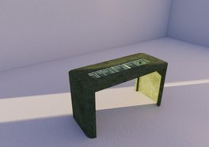
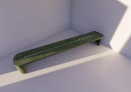
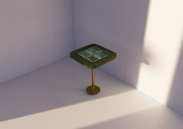
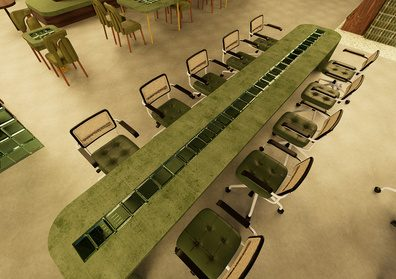
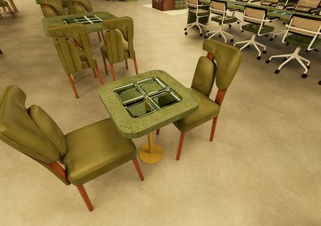
Bureaux collectifs
Conçu comme un espace de recherche et d’échange, cet îlot semi-circulaire favorise le travail collaboratif tout en préservant une certaine intimité au sein de l’espace partagé.
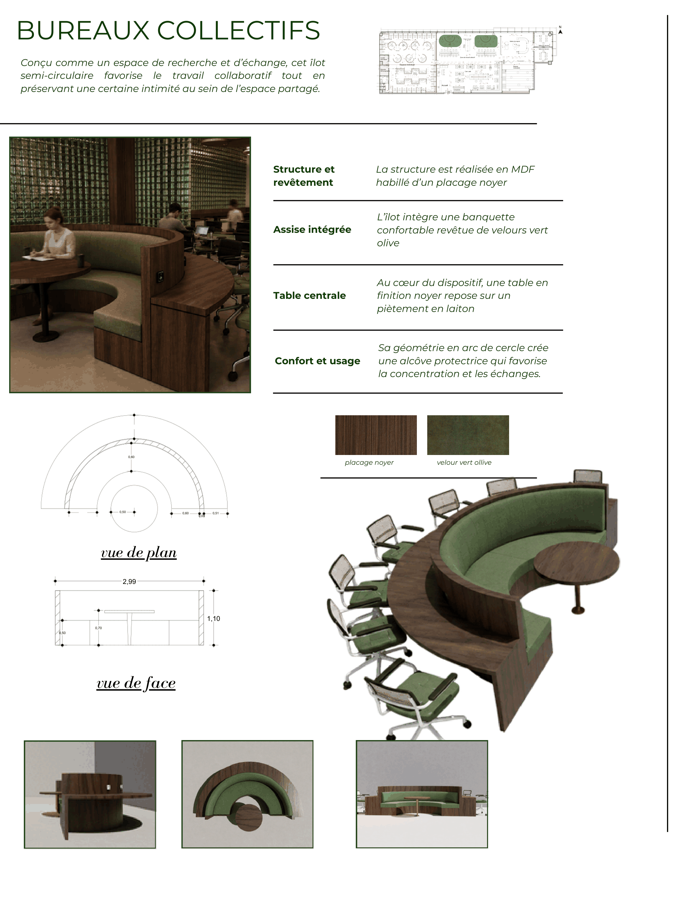
Planche complète : rendu d’ambiance de l’îlot semi-circulaire, fiche construction et usage, plan de repérage, swatches (placage noyer, velour vert olive), vues de plan et de face cotées (2,99 de large, 1,10 de haut) et rendus de l’îlot sous trois angles.
| Rubrique | Description |
|---|---|
| Structure et revêtement | La structure est réalisée en MDF habillé d’un placage noyer |
| Assise intégrée | L’îlot intègre une banquette confortable revêtue de velours vert olive |
| Table centrale | Au cœur du dispositif, une table en finition noyer repose sur un piètement en laiton |
| Confort et usage | Sa géométrie en arc de cercle crée une alcôve protectrice qui favorise la concentration et les échanges |
Cotes relevées sur la planche : 2,99 de largeur en vue de face, 1,10 de hauteur, 0,60 de profondeur d’assise.
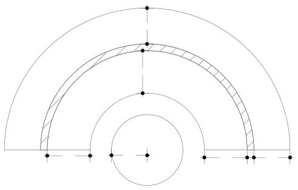
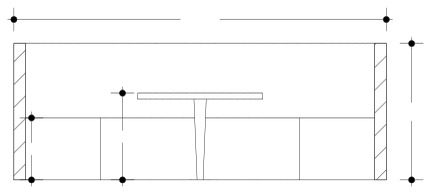
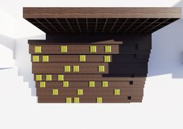
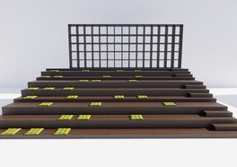
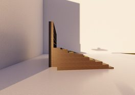
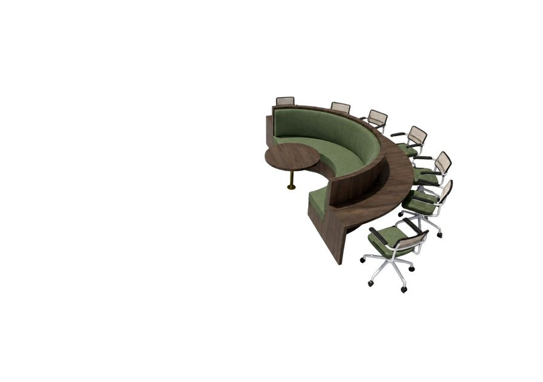
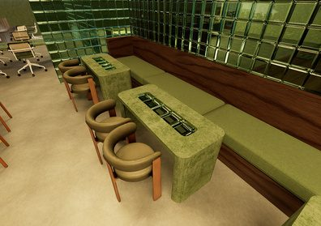
Les gradins
Cet espace polyvalent accueille conférences, lectures publiques, récitals de poésie, rencontres littéraires et séances de Book Club dans une atmosphère conviviale et inspirante.
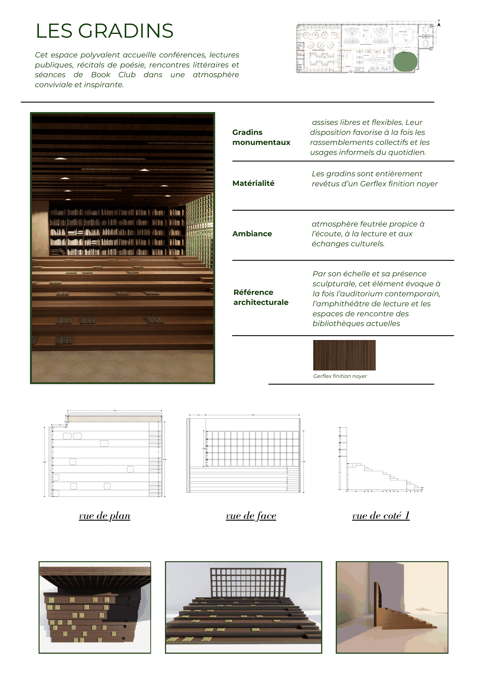
Planche complète : photo d’ambiance des gradins monumentaux devant une bibliothèque, fiche nature et ambiance, plan de repérage, swatch Gerflex finition noyer, vues de plan, de face et de côté 1 cotées, puis trois rendus de l’objet.
| Rubrique | Description |
|---|---|
| Gradins monumentaux | Assises libres et flexibles. Leur disposition favorise à la fois les rassemblements collectifs et les usages informels du quotidien |
| Matérialité | Les gradins sont entièrement revêtus d’un Gerflex finition noyer |
| Ambiance | Atmosphère feutrée propice à l’écoute, à la lecture et aux échanges culturels |
| Référence architecturale | Par son échelle et sa présence sculpturale, cet élément évoque à la fois l’auditorium contemporain, l’amphithéâtre de lecture et les espaces de rencontre des bibliothèques actuelles |
Cotes relevées sur la planche : 7,63 de longueur en plan, 5,00 en vue de face, 2,65 en élévation latérale, nez de marche de 0,50 × 0,70.
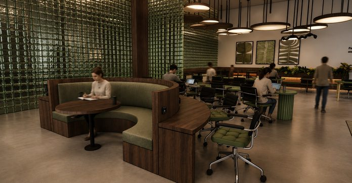
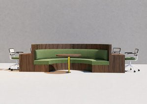
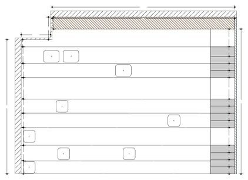
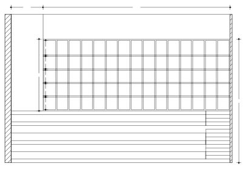
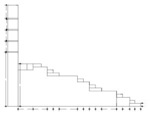
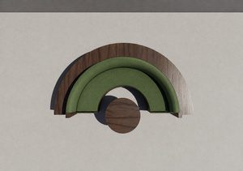
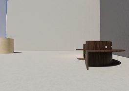
04 — Contact